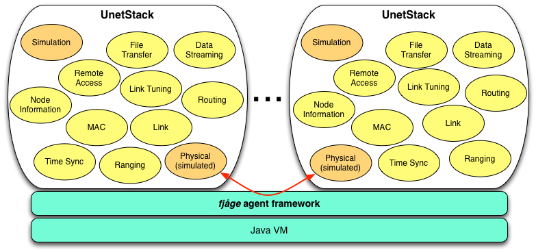

The Unet simulator uses the UnetStack implementation to simulate an underwater network on a single computer. It allows agents and protocols to be simulated in realistic channel conditions, with minimum effort. The simulator was designed with two key goals:
Essentially, once a protocol is developed and tested in simulation, it is ready to be deployed and tested at sea in any UnetStack-compatible modem.
An instance of a fjåge container with all the agents in a stack is created for each node in the simulated network. The agent providing the Physical service usually provides access to the modem. This agent is replaced by one providing a simulated Physical service that micis the modem behavior, but in a simulated environment. These simulated physical layer agents communicate with each other through the fjåge framework to provide appropriate propagation delay, packet loss, etc to mimic an underwater environment. This allows the exact same agent that runs in a UnetStack-compliant modem during a field experiment to be tested in the simulation environment. Additionally, a Simulation agent is added to each node to provide stimulus (e.g. generate load) and to monitor activity (e.g. log received data).
A domain-specific language (DSL) is developed to allow users to describe a simulation scenario in a natural way. This significantly reduces the barrier to entry for new researchers. A sample simulation DSL script is shown below:
channel.soundSpeed = 1500.mps
modem.dataRate = [800.bps, 2400.bps]
modem.frameLength = [16.bytes, 64.bytes]
modem.powerLevel = [0.dB, 0.dB]
simulate 1.hour, {
def buoy1 = node('Buoy-1', location: [0, 0, 0])
def buoy2 = node('Buoy-2', location: [1.km, 500.m, 0])
def auv1 = node('AUV-1', location: [0, 100.m, 0], mobility: true)
auv1.motionModel = [speed: 1.mps, turnRate: 1.dps]
}
The simulator is highly customizable, with the ability to support user-defined modem behavioral models, physics-based channel models, various motion models, customized trace file formats, etc.
The simulator is available for download. Detailed documentation on Running Simulations is available in the UnetStack Documentation.
{kind=link}